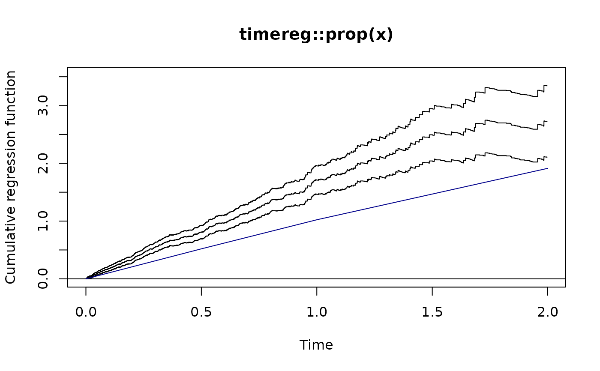

Clayton-Oakes frailty model
ClaytonOakes( formula, data = parent.frame(), cluster, var.formula = ~1, cuts = NULL, type = "piecewise", start, control = list(), var.invlink = exp, ... )
Arguments
| formula | formula specifying the marginal proportional (piecewise constant) hazard structure with the right-hand-side being a survival object (Surv) specifying the entry time (optional), the follow-up time, and event/censoring status at follow-up. The clustering can be specified using the special function |
|---|---|
| data | Data frame |
| cluster | Variable defining the clustering (if not given in the formula) |
| var.formula | Formula specifying the variance component structure (if not given via the cluster special function in the formula) using a linear model with log-link. |
| cuts | Cut points defining the piecewise constant hazard |
| type | when equal to |
| start | Optional starting values |
| control | Control parameters to the optimization routine |
| var.invlink | Inverse link function for variance structure model |
| ... | Additional arguments |
Author
Klaus K. Holst
Examples
set.seed(1) d <- subset(simClaytonOakes(500,4,2,1,stoptime=2,left=2),truncated) e <- ClaytonOakes(survival::Surv(lefttime,time,status)~x+cluster(~1,cluster), cuts=c(0,0.5,1,2),data=d) e#> Estimate 2.5% 97.5% #> log-Var:(Intercept) -0.92225 -1.16925 -0.6753 #> x 2.88803 2.58173 3.2307 #> (0,0.5] 1.07892 0.95530 1.2185 #> (0.5,1] 1.21697 1.06967 1.3846 #> (1,2] 1.16268 1.01451 1.3325 #> #> Dependence parameters: #> Variance 2.5% 97.5% Kendall's tau 2.5% 97.5% #> (Intercept) 0.39762 0.31060 0.50903 0.16584 0.13442 0.2029d2 <- simClaytonOakes(500,4,2,1,stoptime=2,left=0) d2$z <- rep(1,nrow(d2)); d2$z[d2$cluster%in%sample(d2$cluster,100)] <- 0 ## Marginal=Cox Proportional Hazards model: ts <- ClaytonOakes(survival::Surv(time,status)~timereg::prop(x)+cluster(~1,cluster), data=d2,type="two.stage") ## Marginal=Aalens additive model: ts2 <- ClaytonOakes(survival::Surv(time,status)~x+cluster(~1,cluster), data=d2,type="two.stage") ## Marginal=Piecewise constant: e2 <- ClaytonOakes(survival::Surv(time,status)~x+cluster(~-1+factor(z),cluster), cuts=c(0,0.5,1,2),data=d2) e2#> Estimate 2.5% 97.5% #> log-Var:factor(z)0 -0.58294 -0.95495 -0.2109 #> log-Var:factor(z)1 -0.52286 -0.71031 -0.3354 #> x 2.57827 2.37165 2.8029 #> (0,0.5] 1.03878 0.94306 1.1442 #> (0.5,1] 1.00684 0.89868 1.1280 #> (1,2] 0.89075 0.78213 1.0144 #> #> Dependence parameters: #> Variance 2.5% 97.5% Kendall's tau 2.5% 97.5% #> factor(z)0 0.55826 0.38483 0.80983 0.21822 0.16137 0.2882 #> factor(z)1 0.59282 0.49149 0.71505 0.22864 0.19727 0.2634e3 <- ClaytonOakes(survival::Surv(time,status)~x+cluster(~1,cluster),cuts=c(0,0.5,1,2), data=d,var.invlink=identity) e3#> Estimate 2.5% 97.5% #> Var:(Intercept) 0.50280 0.37659 0.6290 #> x 3.07849 2.75254 3.4430 #> (0,0.5] 0.82748 0.73495 0.9317 #> (0.5,1] 0.97306 0.85420 1.1085 #> (1,2] 1.00635 0.87488 1.1576 #> #> Dependence parameters: #> Variance 2.5% 97.5% Kendall's tau 2.5% 97.5% #> (Intercept) 0.50280 0.37659 0.62901 0.20090 0.15846 0.2393